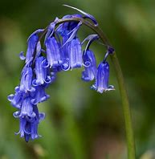
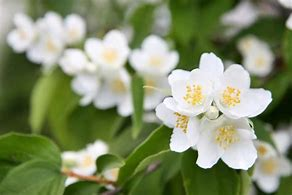

ASOS Plants

HOME | SERVICES | IMAGE GALLERY | ABOUT US | CONTACT US | PRIVACY POLICY |
The Bluebell

Bluebells grow well in either sun or partial shade, but do better out of direct,
strong sunlight. They prefer a moist, but well-drained soil that doesn’t
dry out in summer.
The Jasmine

Indoors, jasmines prefer a brightly lit position, preferably a south-facing or
west-facing aspect, but with some protection from strong, burning sunlight in
summer. They can be moved outside to a warm, sunny patio in summer, but make
sure you bring them back indoors before the weather turns cold and frosty in autumn.
They need a minimum temperature of 13-15°C.
The Lavender
Easy to grow shrub that flowers in late spring and summer. Is best planted in
spring, in free-draining soil and thrives in full sun and is drought tolerant.
The Lilies
 Grown from bulbs, lilies are perennial flowers that will return year after year and
require minimal care, provided that you plant them in the right place. Plant in the fall,
a few weeks before the winter brings freezing temperatures, but ensure they are planted where
there is lots of available sunlight, betweem 6-8hrs per day.
Grown from bulbs, lilies are perennial flowers that will return year after year and
require minimal care, provided that you plant them in the right place. Plant in the fall,
a few weeks before the winter brings freezing temperatures, but ensure they are planted where
there is lots of available sunlight, betweem 6-8hrs per day.
The Marigold
Marigolds need a sunny position, as they flower poorly in shade. They need a
well-drained soil that holds moisture during their summer flowering period.